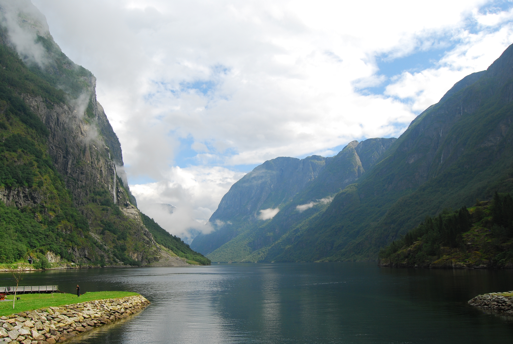
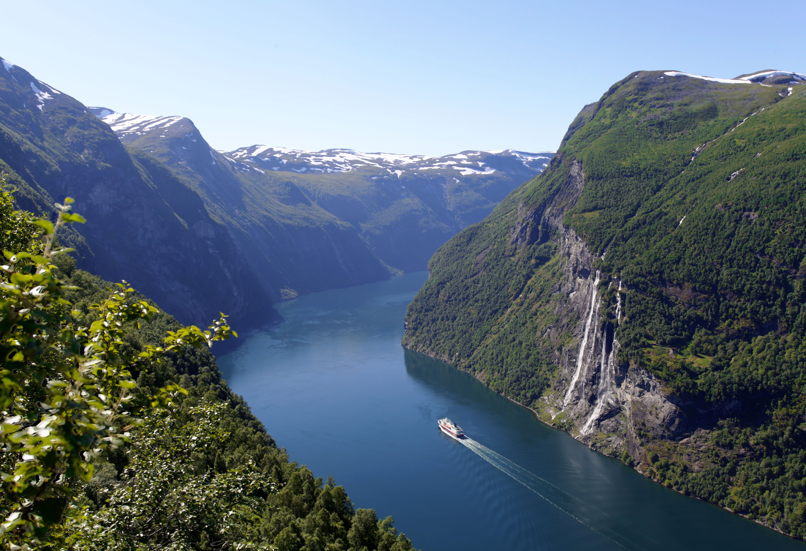
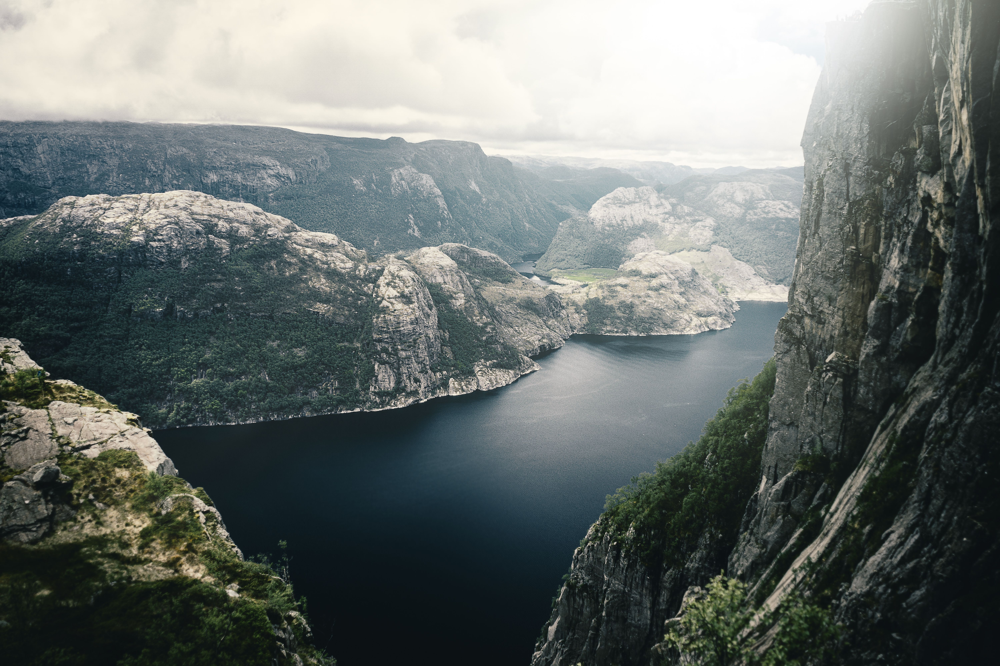

Nærøyfjord
Eco-CertificadoPatrimonio de la UNESCO.
Inicio > Destinos > Fiordos Noruegos y Rutas Sostenibles
Descubre rutas de bajo impacto por los fiordos noruegos: navegación eléctrica, kayak guiado y operadores con certificación ecológica bajo la luz de la aurora boreal.

Patrimonio de la UNESCO.

Crucero silencioso entre las cascadas Siete Hermanas.

Kayak guiado hasta el Púlpito (Preikestolen).